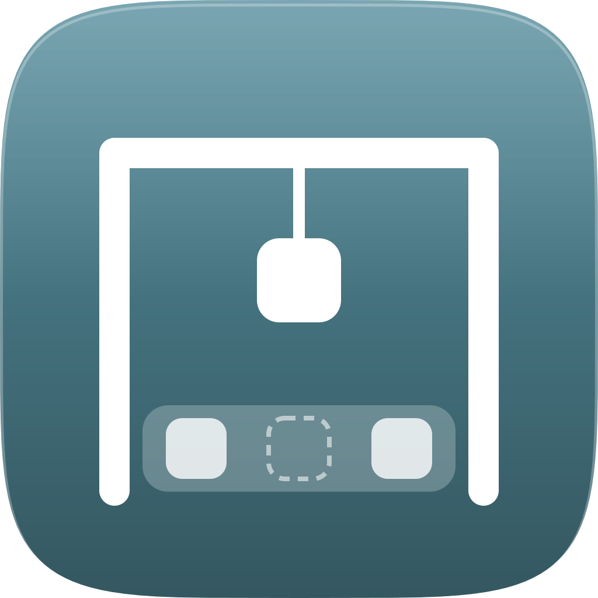
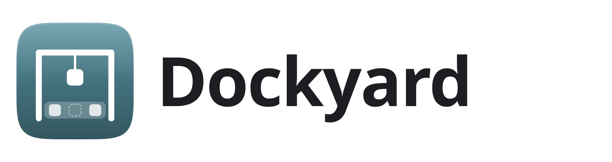
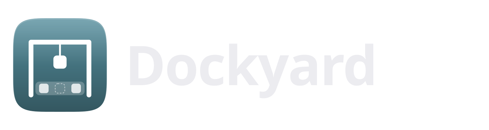
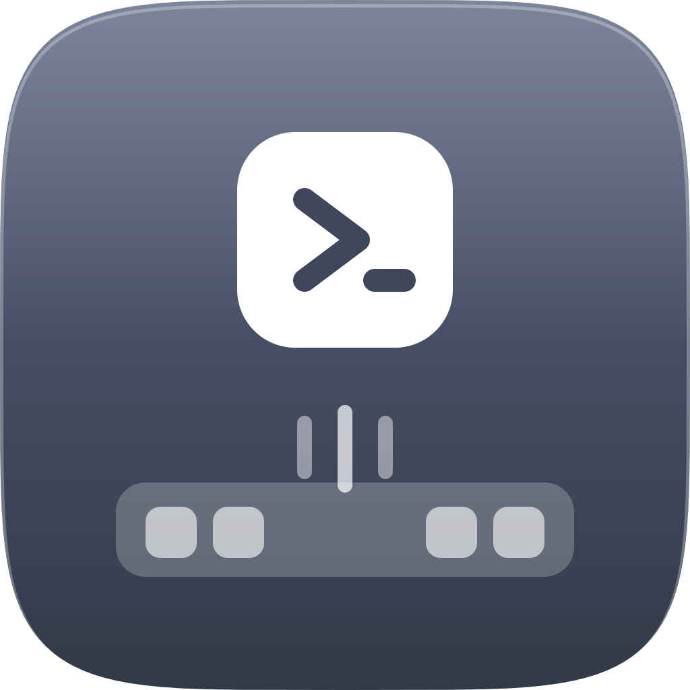
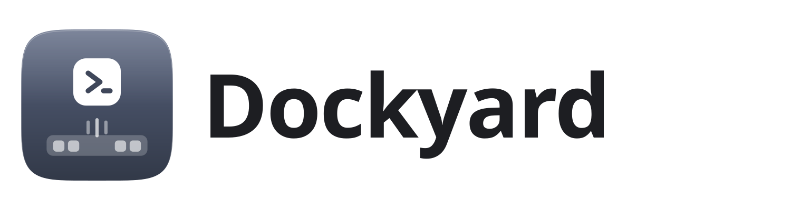
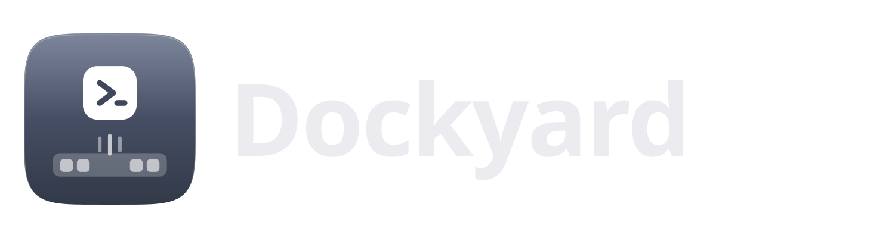
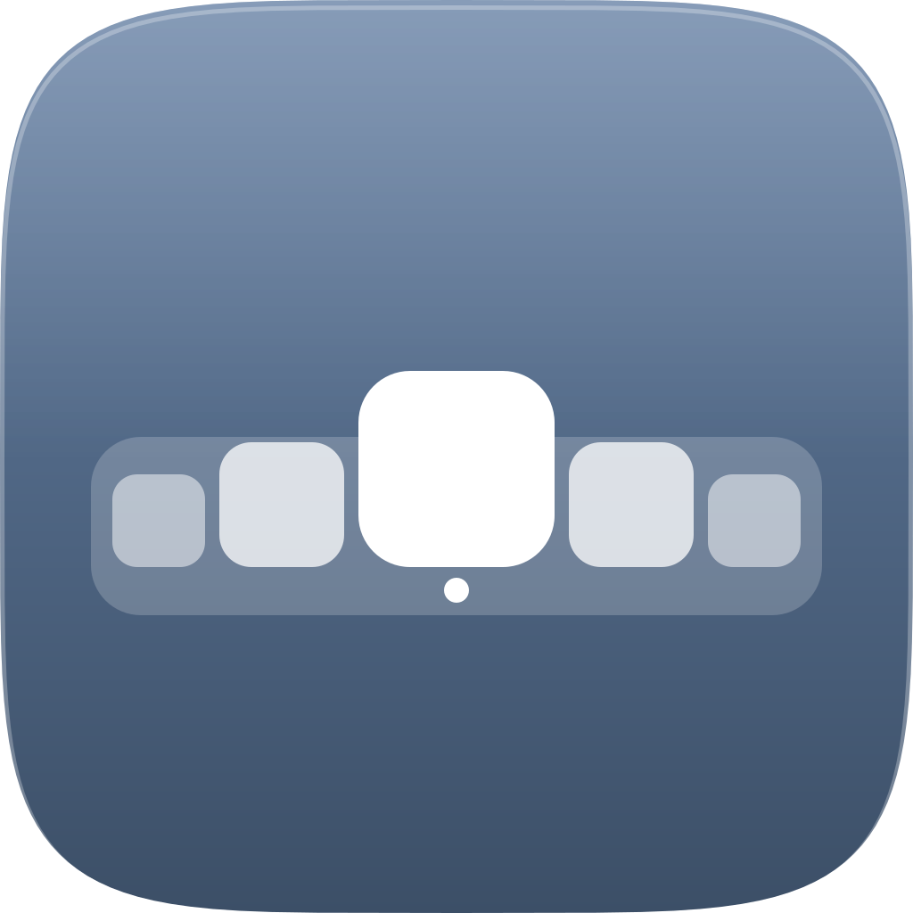
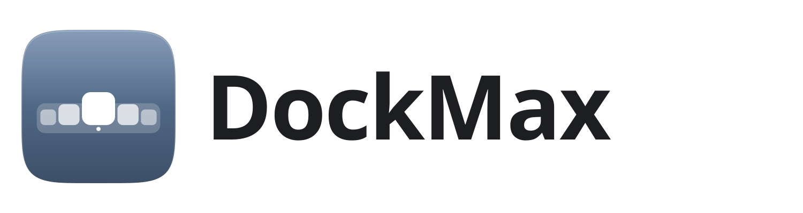
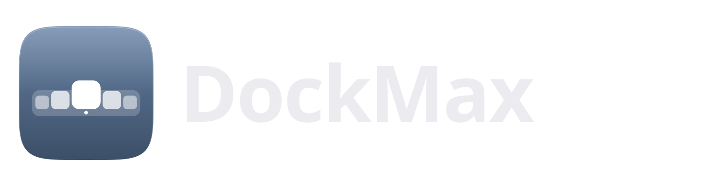

G6 · Conceitos de marca
Ícone em superelipse com esmalte de dois tons (paleta do DESIGN.md) e o logotipo em Segoe UI Variable Display 600. Tamanhos: 256, 64, 32 e 24 px.
Dockyard A · Pórtico
Esmalte petróleo. Um pórtico de estaleiro ergue um ladrilho da barra: a barra é o dock, o ladrilho que sobe é o lançador.



Dockyard B · Lançamento
Esmalte tinta. O ladrilho do lançador (o prompt ›_ do Alt+Space) sai da barra com linhas de impulso.



DockMax · Ampliação (referência)
Esmalte ardósia. Os ladrilhos crescem em curva até o do meio, como a ampliação do dock, com o ponto de painel aberto embaixo.


